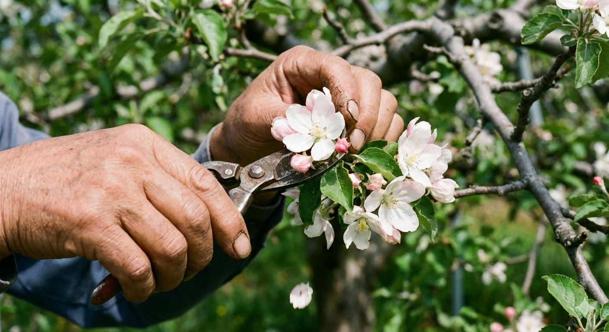
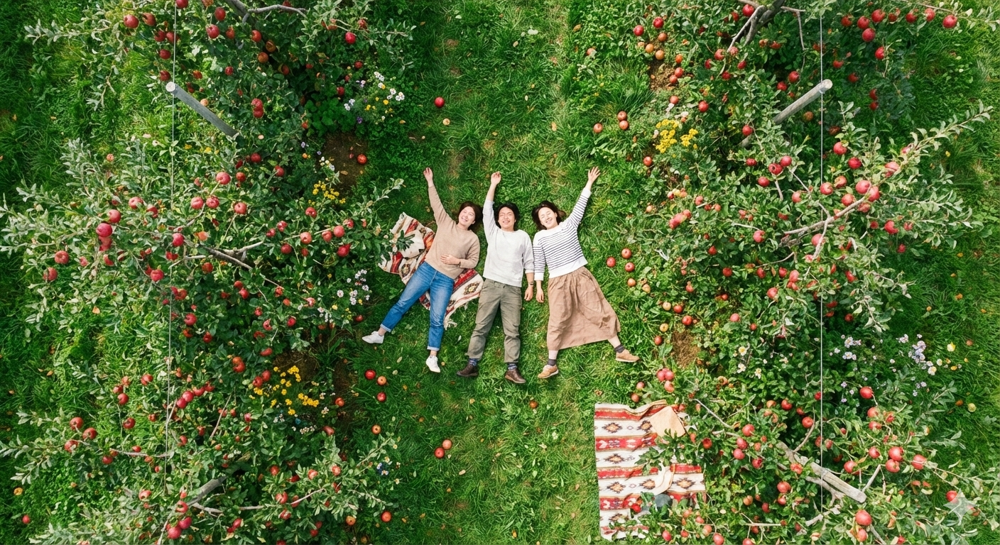

3日間。その空白に、
何が流れ込むか。
パッケージ旅行のような、分刻みの感動は用意していません。 しかし、農家の休憩時間にふと見上げる空の青さや、揺れる焚き火を囲んでこぼれる本音の会話の中に、都会では決して味わえない「感情のピーク」が隠れています。 その瞬間を見つけるのは、あなた自身です。
アウェイがホームに変わる、
最初の乾杯。
青森駅で落ち合い、簡単な市内観光の後、レンタカーを走らせて黒石へ。
農家行きつけの焼き鳥屋へ向かいます。
「初めまして」のぎこちなさは、代行車で宿へ帰る頃には消えているはず。
地元のルールに身を委ねる、心地よい夜が始まります。

一玉に、全神経を注ぐ
「選別」の儀式。
津軽の静かな朝の空気を吸ってから、農園に入ります。
園地で行う「摘果（てきか）」は、一つの枝に実った5〜6つの実から、最も優れた一玉だけを残す命の選別。
残された一玉に栄養を集中させることで、秋、真っ赤な「りんご」が完成します。
どの実を残し、どれを落とすか。農家の思考をトレースしながら、全神経を指先に集中させる。
それは、日常のノイズを削ぎ落とす、瞑想のような時間です。

静寂に身を委ねる。
作業に疲れたら、草むらに寝転んで休憩タイム。
風の音や、土の匂い。五感が騒がしくなるほど、静かな時間。
スマホは置いて、岩木山と津軽平野を眺めながらコーヒーを飲む。
これ以上の贅沢は、きっと他にありません。

150年の歴史を歩き、
再会を約束する。
最終日は、明治時代から続く青森りんごの長い歴史を辿る旅へ。
弘前・黒石の街並みに残る「りんごが育てた文化」に触れることで、昨日自分が手をかけた一玉が、途方もない時間の積み重ねの上にあることを知ります。
「収穫の秋に、またおいで」
農家と交わす言葉は、もう社交辞令ではありません。
この土地の歴史と、あなたの人生が交差する。新しい関わりが、ここから始まります。